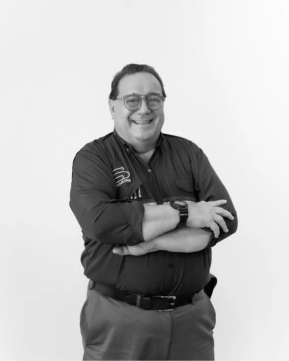
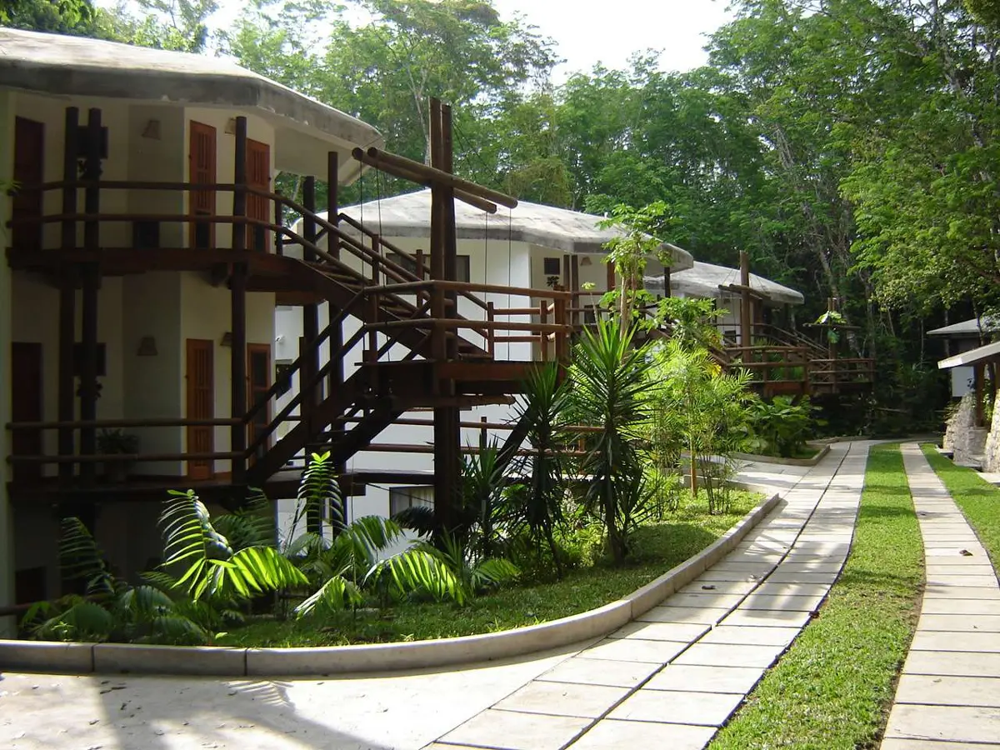
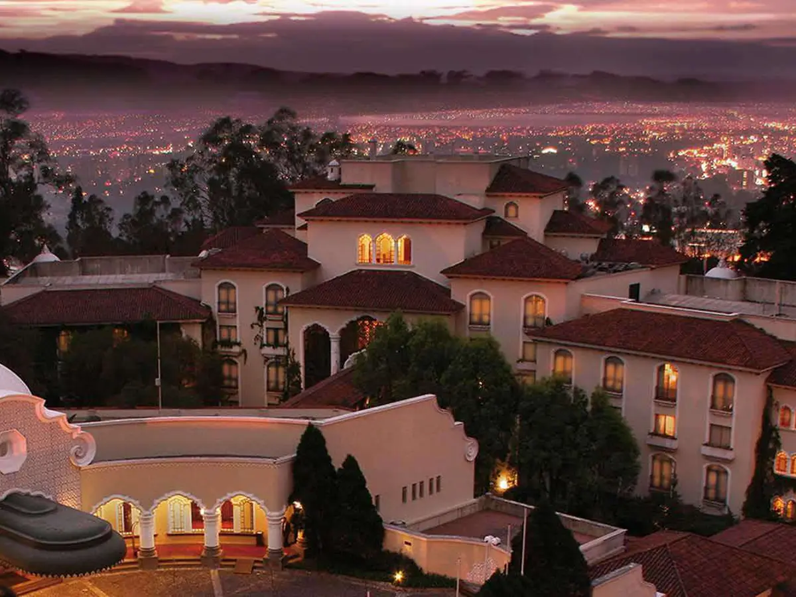
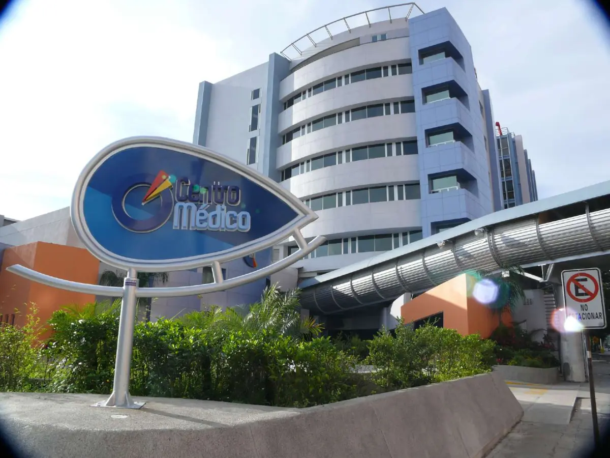
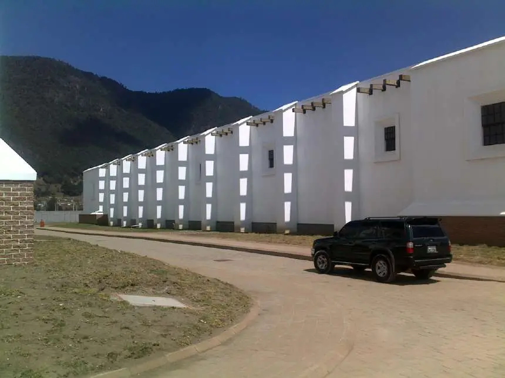
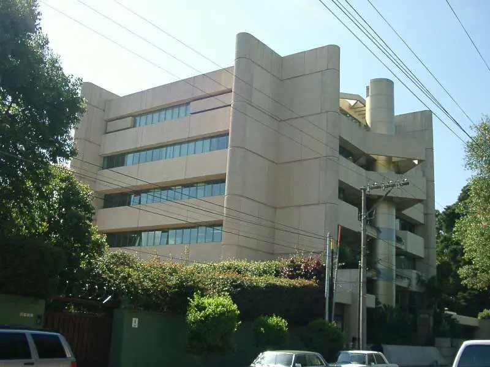
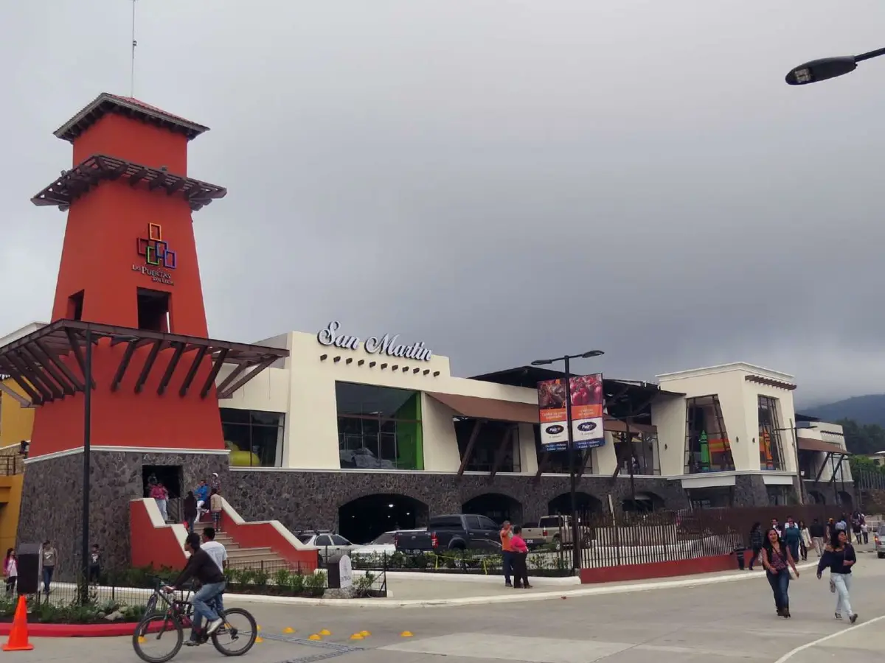
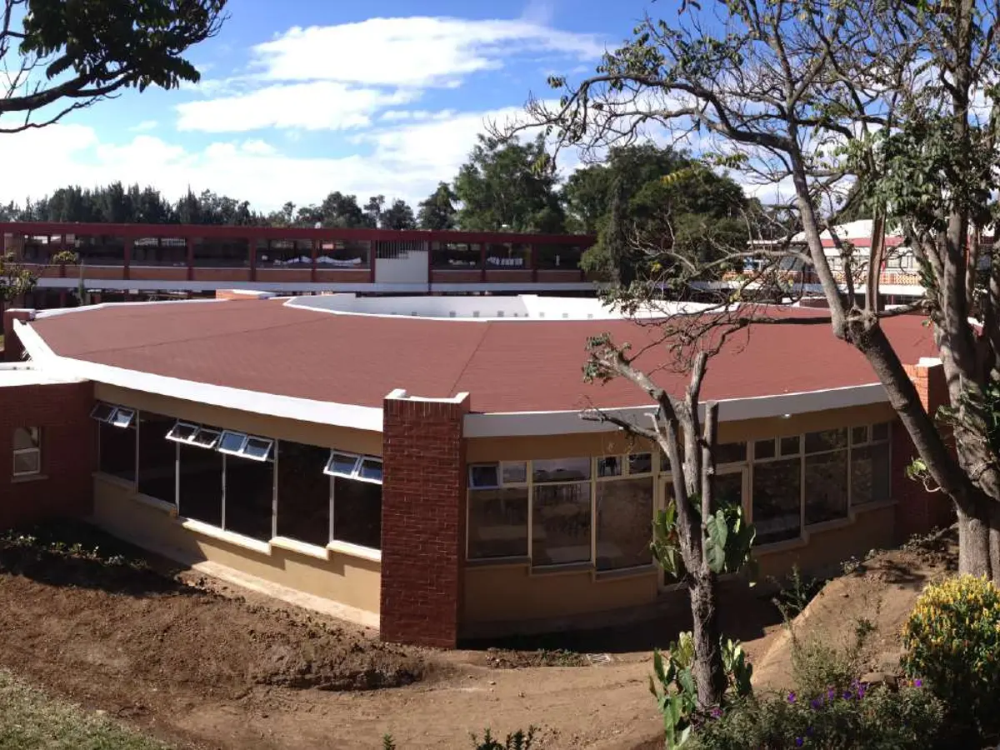
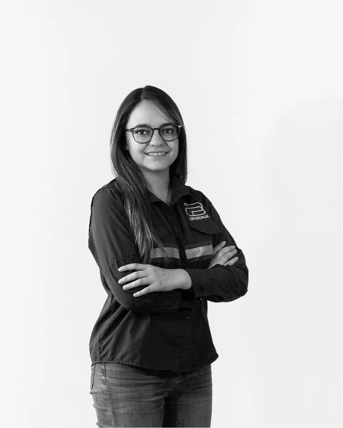

Nosotros Fundador
Arquitecto · Colegiado No. 401
Arq. Daniel Borja Rosales
Cuatro décadas entre el aula y la obra. Formó a más de 1,500 arquitectos en la Universidad Rafael Landívar y ha diseñado, coordinado y supervisado proyectos hoteleros, hospitalarios, industriales y comerciales en Guatemala y Centroamérica.
- Práctica profesional
- 1983
- Arquitectos formados
- +1,500
- Años de trayectoria universitaria
- +20

Tres fechas que ordenan la historia
-
1983
Su propia oficina
Abre el taller «Arquitecto Daniel Borja y colaboradores» e inicia su práctica independiente.
-
1991
Nace la metodología
En unidad profesional con el Ing. Jaime Cáceres Knox diseña la metodología de servicios que la oficina aplica hasta hoy.
-
2019
Nace Grupo Borja
Se integra la Ing. Lucía Borja y comienza la modernización de la firma.
Formación
Periodo1962 – 1998-
1962 – 1974
Colegio La Preparatoria
Primaria, básico y diversificado en la Ciudad de Guatemala. Se gradúa de Bachiller en Ciencias y Letras.
-
1972 – 1974
Alumno abanderado
Distinción del Colegio La Preparatoria durante sus últimos tres años.
-
1976 – 1982
Licenciatura en Arquitectura
Facultad de Arquitectura de la Universidad Rafael Landívar.
-
1982
Premio a la Mejor Tesis del Año
Otorgado por el Colegio de Arquitectos de Guatemala.
-
1982 – 1998
Postgrado en Dirección y Administración Universitaria
Diversos cursos que acompañaron su carrera directiva en la URL.
El académico
Periodo1980 – 2000Consideró a la Facultad de Arquitectura su mejor obra.
Carrera directiva · Facultad de Arquitectura URL
- 1983 – 1987 Secretario
- 1987 – 1990 Vicedecano
- 1990 – 1998 Decano
1987 – 1992
Fundador del Diseño Industrial en Guatemala
Fundó el Departamento de Diseño Industrial de la Universidad Rafael Landívar y fue su primer director. Abrió en el país una disciplina que hasta entonces no tenía formación universitaria propia.
Cátedras en Arquitectura · 1980 – 2000
- Matemática
- Física
- Criterio estructural
- Estática
- Resistencia de materiales
- Mecanismos
- Análisis y diseño estructural
- Composición arquitectónica
- Diseño industrial
- Métodos de investigación
Cátedras en Humanidades · 1982 – 1985
- Identidad cultural
- Folklore y costumbres guatemaltecas
-
1982 – 1984
Fundador y primer secretario de la Asociación de Egresados de la URL.
-
URL – INGUAT
Director-coordinador de los estudios para el desarrollo de infraestructura turística de la Costa Atlántica de Guatemala y del sistema nacional de ecocampamentos.
La práctica
Periodo1983 – 1991Mientras enseñaba estática y resistencia de materiales, abrió su taller y llevó ese rigor estructural a cada proyecto. De ahí viene la forma de trabajar que distingue a la firma: arquitectura pensada con criterio de ingeniería.
-
1983
Taller de Arquitectura y Proyectos
Funda la oficina «Arquitecto Daniel Borja y colaboradores»: proyectación arquitectónica, sistemas estructurales y constructivos, coordinación de proyectos y consultoría.
-
1990
Premio Lámina de Oro
Asociación Latinoamericana del Fibrocemento, al mejor proyecto desarrollado con láminas de fibrocemento.
-
1991
Premio Nacional Opus de Arquitectura
Rama de Conservación del Patrimonio Cultural y Natural, por el Hotel Villa Maya en Petén.
-
1991
Unidad profesional y metodología de servicios
Junto al Ing. Jaime Cáceres Knox forma una unidad de desarrollo y consultoría. De ahí nace la metodología que la oficina sigue hasta hoy:
- Separación de cada diseño por especialidad
- Cotización de cada diseño con tres proveedores
- Selección de las mejores empresas y profesionales
- Cotización de la construcción con la planimetría
- Dirección y supervisión de obra
- Control de la metodología en cada etapa

Obra y clientes
Periodo1991 – hoyPlanificación, coordinación y supervisión de proyectos de vivienda, comercio, industria, hotelería y salud en Guatemala y Centroamérica.
Han confiado en su trabajo
- Villas de Guatemala
- Hospital Centro Médico
- UNOP
- Licorera Quetzalteca
- Casa Botrán
- Agroindustrias HAME
- Inmobiliaria El Globo
- Grupo Los Tres
- Hotel Quinta Real
- Supermercados SUMA
- Colegio Liceo Javier
- Hoteles G6
Obra por sector
-

Hotelero
7 obras- Hotel Villa Maya, Petén
- Hotel Quinta Real (hoy Vista Real)
- Villa Santa Catarina
- Santa Catarina Palopó
- Villa Petenchel
- Villa Grande Chichicastenango
- Consultoría Hoteles G6, Campeche
-

Hospitalario
3 obras- Hospital Centro Médico, zona 10
- UNOP · Hospital de Niños con Cáncer
- Hospital Yarden, zona 7
-

Industrial
2 obras- Casa de las Nubes · Ron Zacapa
- Casa Botrán, centro de mezclas y añejamiento
-

Corporativo
3 obras- Edificio HAME
- Edificio El Globo, 15 niveles
- Edificio VIYA, Oakland
-

Comercial
8 obras- Centro Comercial Las Puertas
- Ferretería y Plaza El Globo
- Grupo Los Tres · Porsche y Volvo
- Supermercados SUMA
- Multimayoreo
- Mi Super Fresh, Marinico y Pinula
- C.C. Santa María, Quetzaltenango
- C.C. Santa Bárbara, Sacatepéquez
-

Educativo
2 obras- Colegio Liceo Javier
- Colegio Príncipe de Asturias
También: residencias, edificios, condominios e interiorismo para comercios y oficinas. Menciones honoríficas, Concurso de Obras de Cementos Progreso · 2000 y 2002.
Conoce cada proyecto a detalle, con fotografías y datos técnicos, en el portafolio.
Ver portafolio completoServicio institucional
Periodo1984 – 2011Colegio de Arquitectos de Guatemala
-
1984
Vocal I de Junta Directiva.
-
2009 – 2011
Vicepresidente del Tribunal de Honor.
Tribunal Supremo Electoral
-
1986 – 1998
Asesor y consultor en diversos proyectos, en representación de la Universidad Rafael Landívar.
-
1999
Vocal de la Junta Electoral del Departamento de Guatemala y coordinador de infraestructura y montajes del Centro de Información.
-
2003
Coordinador General del Centro de Información, Elecciones Generales.
El legado continúa
Desde2019En 2019 nace Grupo Borja. La Ing. Lucía Borja se integra a la firma y la experiencia de cuatro décadas se une con la ingeniería y las nuevas herramientas de gestión.
El criterio con que el Arq. Borja enseñaba estructuras y dirigía obras es hoy el estándar del equipo: arquitectura con precisión técnica y entregas que cumplen lo prometido.
-
Arq. Daniel Borja
Fundador · Visión arquitectónica
LinkedIn ↗ -

Ing. Lucía Borja
Gerencia · Excelencia en ingeniería
LinkedIn ↗